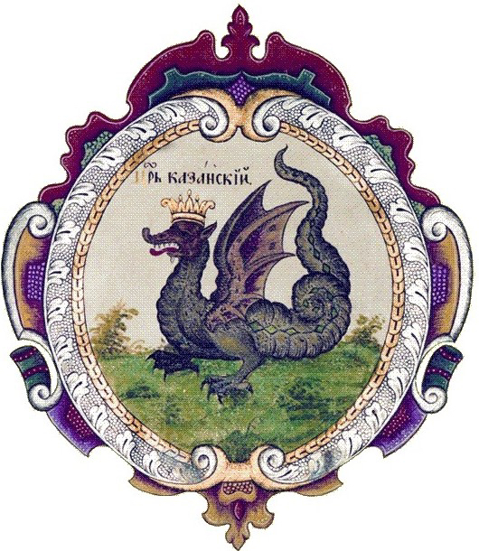

Легенды о Зиланте
Большинство легенд, связанных с Казанью, противоречивы, и Зилант - не исключение. Существует несколько вариантов легенды о Зиланте.
Прекрасная девица вышла замуж за жителя старой Казани. Ей приходилось брать воду из реки Казансу, и она пожаловалась местному хану на неудачное расположение его столицы. Она посоветовала ему перенести город на холм Зилантов, и хан согласился. Однако холм был заселен многочисленными змеями, которые были "крепкими, как бревно". Их предводителем был огромный двухголовый змей, то есть Зилант. Одна голова питалась только травой, а другая глотала девственниц и юношей. Один волшебник посоветовал хану построить возле холма соломенный и деревянный навес. Весной змеи вышли из своих зимних норок и забрались в кучу соломы. Послан был рыцарь-изгой, который поджег кучу соломы и выжег змей. Они были смертоносны, "убивая людей и лошадей своей вонью". Однако гигантский двухголовый змей-дракон сбежал к озерам Кабан.
По рассказам, он до сих пор живет в водах озера и время от времени мстит горожанам. Согласно другим историям, гигантский змей был превращен в Дию, духа, который основал подводное царство озера.
Рассказывают также, что Зилант не убежал в озеро, а попытался отомстить рыцарю, который к тому времени отъехал от Казани на расстояние около 50 çaqrım (устаревшие татарские единицы измерения). В ходе последовавшей схватки Зилант разрубил героя на шесть частей. Однако витязь успел уколоть дракона своей отравленной пикой, и Зилант в конце концов умер.
Существует также легенда о возвращении Зиланта в Зилантау.
Говорят, что Зилант вновь поселился в большой пещере неподалеку от холма. Дракон время от времени пролетал над охваченным паникой городом и пил воду из Черного озера. Сначала жители города платили ему дань, но потом им удалось убить его с помощью волшебника.